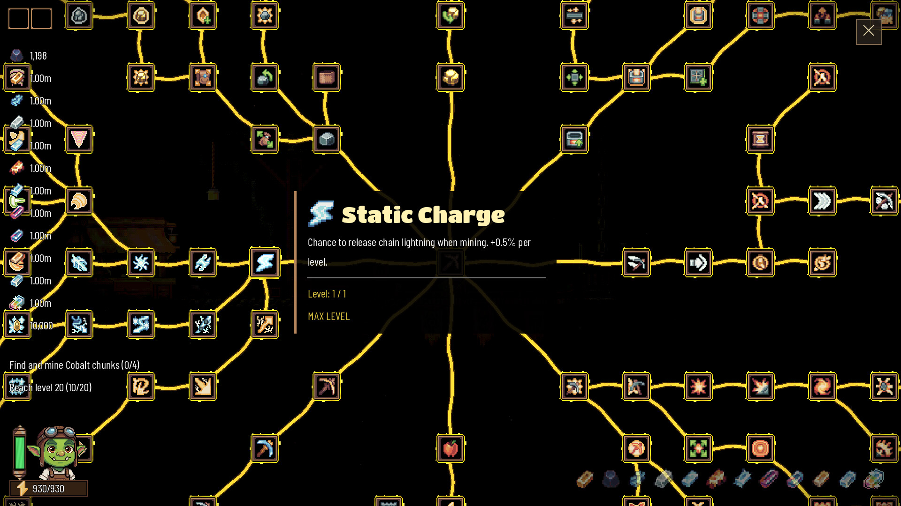

Un amigo está ahora mismo en una época de jugar a jueguecillos que no te hagan pensar. Juegos que no tengan historia, ni mecánicas complejas, ni puzles difíciles. Que sean solo dopamina pura y dura, que solo veas numeritos subiendo acompañados de un festival de luces y colores. Por eso me envió un juego llamado Rock Bottom que se lanzaba en Steam al día siguiente diciéndome que parecía interesante. Yo, que soy un hombre de mundo y curioso por naturaleza, no cierro nunca mis puertas a nada, incluso cuando sé que es un juego del que no voy a extraer nada al final del día.
Los incrementales deberían llamarse casino-likes
A este género se le conoce comúnmente como juegos incrementales o clickers, pero creo que deberíamos rebautizarlos y llamarlos casino-like. Y no lo digo porque despilfarres dinero apostando, sino porque la experiencia de juego es similar a la de una casa de apuestas. La estructura básica es siempre la misma. Mientras que el bucle de un juego incremental consiste en producir, mejorar y reinvertir lo producido, en un casino sería apostar, conocer el resultado y volver a apostar. Ciclos cortos de acción y recompensa inmediata para que sientas que estás progresando constantemente y la rueda nunca pare de girar. A esto hay que sumarle los destellos de colores, los efectos de sonido satisfactorios y los numeritos que nunca paran de subir. Cuando menos te lo esperas, una parte de tu cerebro ya ha hecho clic y estás completamente enganchado.
Ahí es donde creo que reside la virtud de juegos como Rock Bottom. Están genialmente pensados para ser increíblemente adictivos, con un bucle casi perfecto donde te encuentras progresando de forma constante. En este caso el progreso está en avanzar por las distintas capas del subsuelo consiguiendo materiales que sirven para mejorar a tu personaje y que, en última instancia, te sirven para conseguir más materiales. Lo bueno es que en seis u ocho horas ya te lo has terminado y eres libre de seguir con tu vida, pero hay algo en mi interior que no puede dejar de sentir cierta culpabilidad. No por haber derrochado dinero, sino por haber malgastado algo peor, mi tiempo.
Todos los biomas son el mismo bioma
Rock Bottom es esencialmente igual durante todo el juego, quizás más que otros incrementales. Todos los biomas son exactamente iguales, lo único que cambia son los materiales que recoges y su ambientación, ya sea bosque, submarino o lava. El juego está estructurado de manera que cada bioma representa un nivel de mejoras. Cuando consigues los minerales de un bioma tienes que fundirlos para hacer lingotes, que a su vez sirven para mejorar a tu personaje en un árbol de habilidades gigantesco. Esas mejoras te permiten picar más rápido, aumentar la potencia del pico o conseguir mayor número de recursos. Una vez subes de nivel, pasas al siguiente bioma y repites el proceso. Así hasta llegar al final.

La verdad es que no hay mucho más que comentar. Es dopamina pura y dura, como cuando te pones a ver TikTok antes de irte a la cama y cuando menos te lo esperas ya han pasado dos horas. Es un juego de usar y tirar, la definición perfecta de lo que es consumir un producto. Ojo, igual estoy sonando demasiado crítico, así que quiero recalcar que como juego cumple con creces su función de entretenerte. En ese sentido es muy bueno. Pero a mí en lo personal siempre me ha gustado ver los videojuegos como un medio con capacidad de trascender, de aspirar a algo más donde el jugador pueda extraer algún tipo de aprendizaje, reflexión o sentimiento al terminar. En ese otro sentido, el juego no consigue nada. Es ideal si te interesa mantener el encefalograma plano, perfecto para jugarlo mientras escuchas un podcast de fondo o hablas con un amigo por Discord.
En conclusión, Rock Bottom es un incremental decente, pero no considero que sea ni mucho menos uno de los mejores dentro del género. Por ejemplo, creo que el Berry Bury Berry que jugué hace unos meses es una propuesta jugable sustancialmente mejor. De todos modos, si te interesa matar las horas con algo sin complicarte mucho la vida, Rock Bottom es tremendamente adictivo y entretenido, aunque hay alternativas muchísimo mejores dentro de estos casino-likes.
Lo mejor
- Un bucle de progresión tremendamente adictivo.
- Se termina en seis u ocho horas y no se alarga artificialmente.
- Ideal para acompañar un podcast o una conversación de fondo.
Lo peor
- Todos los biomas son idénticos salvo por la ambientación.
- No hay prácticamente nada de historia ni de contenido que deje poso.
- Otros incrementales, como Berry Bury Berry, ofrecen bastante más.
Desglose de puntuación
Veredicto
Un incremental decente y adictivo que cumple su función de entretener, pero que se repite de principio a fin y no deja absolutamente nada detrás.